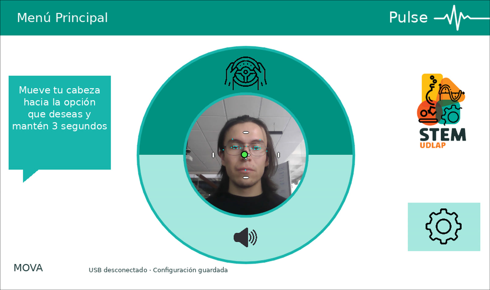
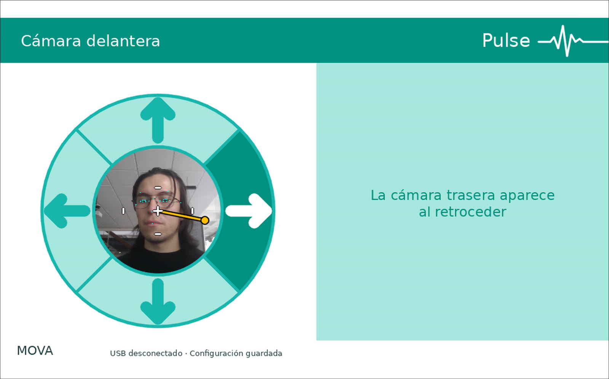
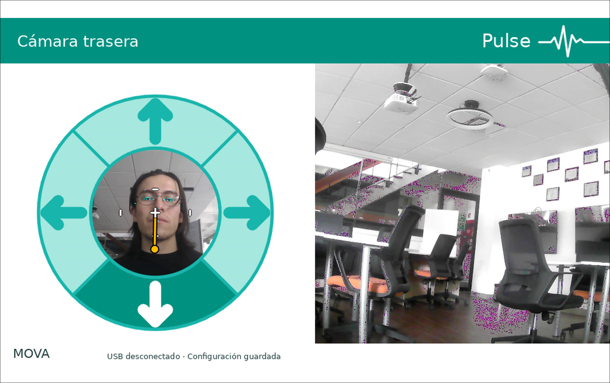
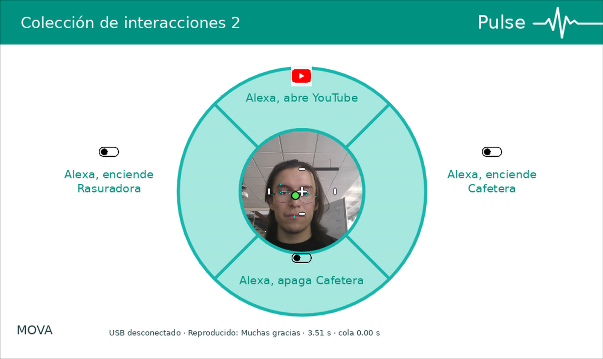

Sillódromo 2026 · INAOE
Manejar una silla de ruedas con la cara.
Visión por computadora · Python · MediaPipe · Arduino
El problema
La silla tiene que entender la intención con lo que sí se puede mover, sin confundir un gesto casual con una orden.
La idea
Cabeza
Elige la dirección.
Giro e inclinación (yaw y pitch) estimados con solvePnP a partir de 6 puntos.
Cejas
Cambia de página.
Levantarlas y sostener pasa a la siguiente página de comandos.
Ojos
Cancela el gesto.
Si el cierre (EAR) supera el umbral, se cancela y se pide parada.
Boca
Detiene la silla.
Abrirla solicita parada y regresa al menú.
Cómo funciona
01
OpenCV captura, refleja y escala cada cuadro.
02
Landmarks faciales en modo video.
03
Suavizado, calibración y umbrales en JSON.
04
Conducir, órdenes a Alexa y frases.
05
USB serial a 9600 baudios hacia la silla.
Captura, visión, audio y escritura serial corren en hilos separados. La cámara trasera solo da vista al retroceder.
Diseñada para no equivocarse
2 s
de calibración: cada usuario registra su postura de reposo.
0.45 s
sosteniendo el gesto antes de que se ejecute.
3 s
para elegir en el menú principal, y volver al centro antes de otra selección.
La interfaz

Menú principal. Conducir o comunicarse.

Conducción. La dirección se ilumina al girar la cabeza.

Reversa. La cámara trasera aparece al retroceder.
Más que moverse
La misma interfaz reproduce órdenes para Alexa y frases de comunicación, con grabaciones o síntesis de voz.
“Alexa, enciende el foco.”
“Alexa, abre YouTube.”
“Muchas gracias.”

El resultado
INAOE · probada en pista
Independencia, un gesto a la vez.
Python · MediaPipe · OpenCV · Tkinter · Arduino